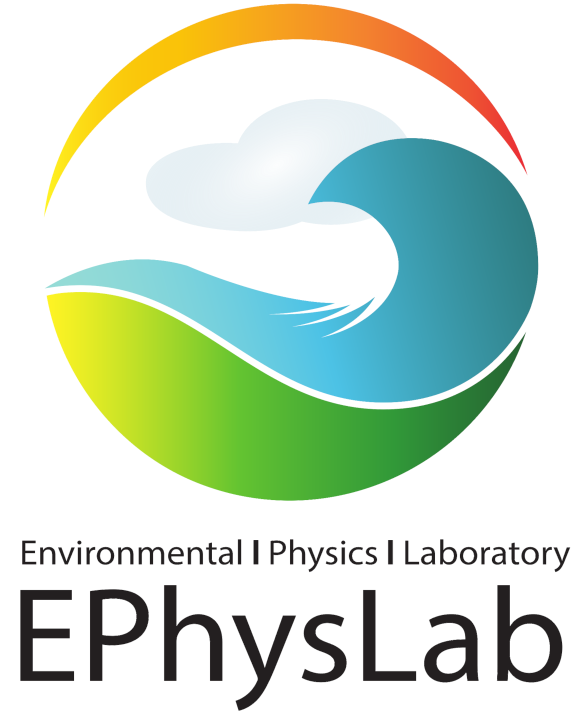

Yi Zhan
PhD in Marine Technology and Engineering
Zhejiang University
海洋技术与工程博士
浙江大学
I received my PhD in Marine Technology and Engineering from Zhejiang University, supervised by Prof. Min Luo and Prof. Abbas Khayyer. During my PhD, I was a visiting scholar at the EPhysLab in Spain, working with Prof. Alejandro J. C. Crespo and Dr. Iván Martínez Estévez.
My research interests lie at the intersection of computational fluid dynamics, high performance computing, and artificial intelligence. Specifically, I focus on:
- Smoothed Particle Hydrodynamics (SPH) methods for fluid-structure interaction problems
- High Performance Computing (HPC) with GPU parallelization for large-scale simulations
- Reinforcement Learning in Computational Fluid Dynamics (RLCFD) for intelligent flow control
我于浙江大学获得海洋技术与工程博士学位，师从罗敏教授与Abbas Khayyer 教授。博士在读期间，我曾赴西班牙 EPhysLab 访学，与 Alejandro J. C. Crespo 教授及 Iván Martínez Estévez 博士合作。
我的研究兴趣涵盖计算流体力学、高性能计算与人工智能的交叉领域，主要包括：
- 面向流固耦合问题的光滑粒子流体动力学（SPH）方法
- 面向大规模数值模拟、基于 GPU 并行的高性能计算（HPC）
- 面向智能流动控制的计算流体力学强化学习（RLCFD）
EPhysLab, Spain EPhysLab，西班牙
Visiting Scholar 访问学者
I was a visiting scholar at the EPhysLab at the University of Vigo in Spain, working with Prof. Alejandro J. C. Crespo and Dr. Iván Martínez Estévez on the development of AI-driven modules for DualSPHysics.
我曾在西班牙维戈大学 EPhysLab 开展访问研究，与 Alejandro J. C. Crespo 教授及 Iván Martínez Estévez 博士合作开发面向 DualSPHysics 的人工智能驱动模块。

Zhejiang University, China 浙江大学，中国
PhD in Marine Technology and Engineering 海洋技术与工程博士
I received my PhD from Zhejiang University under the supervision of Prof. Min Luo and Prof. Abbas Khayyer (Kyoto University). My doctoral research focused on high-performance SPH methods for wave-structure interaction simulations.
我于浙江大学获得博士学位，师从罗敏教授与京都大学 Abbas Khayyer 教授。博士研究聚焦于波浪与结构相互作用模拟中的高性能 SPH 方法。
Hohai University, China 河海大学，中国
BS in Harbour, Coastal and Offshore Engineering 港口航道与海岸工程学士
Awarded Outstanding Undergraduate. Undergraduate thesis focused on the development of a two-dimensional numerical model for tidal wave simulation.
获评优秀本科毕业生。本科毕业论文聚焦于潮波二维数值模型的开发。
Selected publications代表性论文
- Dynamic responses of flexible floating multi-module arrays under solitary waves: SPH simulation and experimental studyCoastal Engineering, 2026Under Review